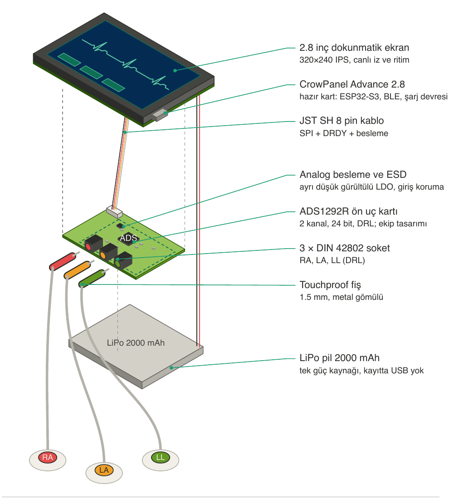
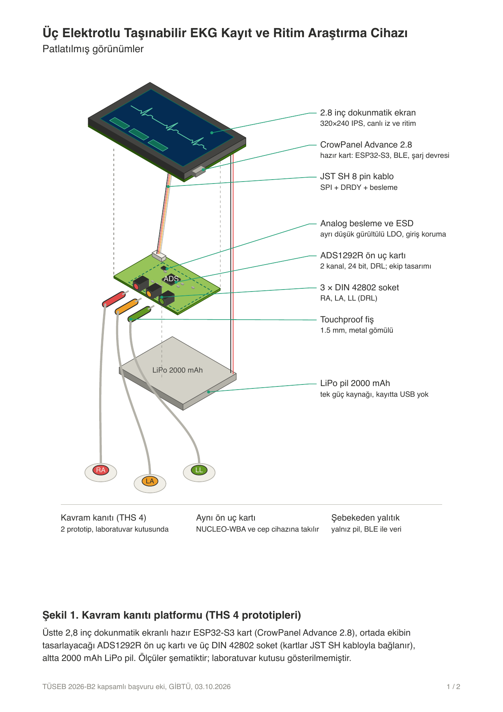
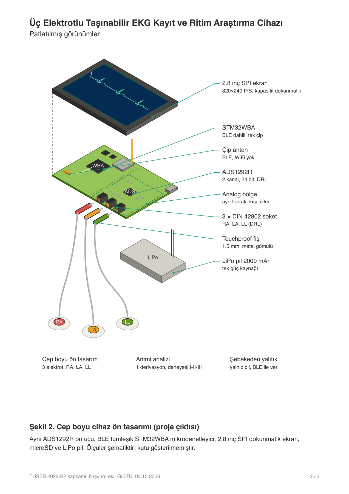

Temel ölçüm zinciri çalıştırıldı
Tek kanallı sinyal alımı, kablosuz aktarım, bilgisayarda CSV kaydı ve tarayıcıda QRS/RR analizi ön çalışmalarda gösterildi. ESP32-S3 kartında canlı EKG izi, filtreler ve dokunmatik ayarlar çalışır durumda.
GİBTÜ · TÜSEB 2026-B2 PROJE BAŞVURUSU
Bu sayfa, Gaziantep İslam Bilim ve Teknoloji Üniversitesi'nin TÜSEB 2026-B2 çağrısına sunduğu projeyi tanıtır. Projede pille çalışan, EKG'yi kendi ekranında gösteren, kaydeden ve kablosuz aktarabilen bir araştırma cihazı prototipi geliştirilecek ve laboratuvarda teknik olarak doğrulanacaktır.
Cihaz araştırma ve eğitim amaçlıdır.
İnsan üzerinde kayıt ve klinik tanı bu projenin kapsamında değildir.

RA, LA ve LL
Nominal ADC çözünürlüğü
Kanal başına örnekleme hızı hedefi
Proje süresi
01 / PROJE
EKG, ritim araştırmalarının temel ölçüm yöntemidir. Ancak bazı ticari cihazlarda ham veriye erişim ve verinin dışa aktarımı sınırlıdır; bu da araştırmacıyı kısıtlar.
Bu projede canlı görüntüleme, cihaz üzerinde kayıt, Bluetooth Low Energy (BLE) ile aktarım ve ritim analizini tek bir pilli cihazda toplayan bir prototip geliştirilecek. Ham ve filtrelenmiş sinyal ayrı ayrı saklanacak. Her kayda yazılım sürümü, kalibrasyon bilgisi, örnek sıra numarası ve sinyal kalitesi işaretleri eklenecek; böylece bir kaydın hangi koşullarda alındığı sonradan izlenebilecek.
Tek kanallı sinyal alımı, kablosuz aktarım, bilgisayarda CSV kaydı ve tarayıcıda QRS/RR analizi ön çalışmalarda gösterildi. ESP32-S3 kartında canlı EKG izi, filtreler ve dokunmatik ayarlar çalışır durumda.
ADS1292R ile 24 bit ölçüm, iki ölçüm modu, sağ bacak sürücüsü, cihaz üzerinde kayıt ve gerçek zamanlı ritim analizi geliştirilecek; her biri kabul testlerinden geçirilecek.
02 / DONANIM MİMARİSİ
Görseller tasarım çizimleridir; üretilmiş bir cihazın fotoğrafı değildir.
KAVRAM KANITI PLATFORMU

2,8 inç dokunmatik ekranlı hazır CrowPanel Advance ESP32-S3 kartı, ekibin tasarlayacağı ADS1292R ön uç kartı, üç DIN 42802 elektrot soketi ve 2000 mAh LiPo pilden oluşur.
CEP BOYU CİHAZ ÖN TASARIMI

Aynı ön uç kartı bu platformda BLE'si tümleşik STM32WBA mikrodenetleyici, SPI dokunmatik ekran, microSD kart ve LiPo güç devresiyle birlikte kullanılacak.
03 / ÖLÇÜM MODLARI
İki mod da aynı donanımda çalışır; hangisinin kullanılacağı yazılımdan seçilir.
RA ve LA elektrotları arasından I derivasyonu ölçülür. LL elektrodu ölçüme katılmaz; sağ bacak sürücüsü (DRL) olarak ortak mod gürültüsünü bastırır.
I = LA − RABu modda üç elektrot takılı olsa da tek derivasyon kaydedilir.
Üç elektrodun tümü ölçüme katılır. I ve II eş zamanlı kaydedilir; III, aVR, aVL ve aVF bu ikisinden hesaplanır ve kayıtta ayrı etiketlenir. Bu modda sağ bacak sürücüsü yoktur.
I = LA − RA · II = LL − RA
III = II − I · aVR = −(I + II)/2
aVL = I − II/2 · aVF = II − I/2Bu modda gürültü kabul sınırını aşarsa ana modla devam edilecektir. Göğüs derivasyonları ve 12 derivasyonlu EKG proje kapsamında değildir.
04 / TARAYICIDAN KAYIT
Ön çalışmalarda geliştirilen web arayüzü cihaza Bluetooth ile bağlanır, canlı EKG izini gösterir ve aldığı kaydı CSV dosyası olarak indirir. Arayüz ayrı sekmede açılır.
Kayıt arayüzünü aç ↗Bağlantı için uyumlu bir cihaz ve Web Bluetooth destekleyen bir tarayıcı gerekir. Tarayıcınız desteklemiyorsa arayüz Android'de Chrome kullanmanızı önerir.
Kayıt sayfasında EKG izi ile tarama hızı ve kazanç ayarları yer alır.
“cihaza bağlan” düğmesine basıp listeden cihazı seçin. Bağlantı kurulunca canlı iz ekranda akmaya başlar.
“kayıt başlat” ile kaydı başlatın. Kaydı durdurduktan sonra “kaydı indir” düğmesiyle CSV dosyasını indirin.
05 / TEKNİK DOĞRULAMA
Bu değerler başvuru formunda yer alan kabul hedefleridir; elde edilmiş test sonuçları değildir.
1 mV, 10 Hz referans sinyalde ölçülecek. Ayrıca girişe indirgenmiş gürültünün 10 µV RMS'yi, saat sapmasının %0,1'i aşmaması hedefleniyor.
Tanımlı kullanım profilinde ölçülecek. 8 saatlik kayıtta açıklanamayan örnek kaybı olmaması, 3 m görüş hattında kablosuz veri kaybının %0,1'i aşmaması hedefleniyor.
MIT-BIH Arrhythmia Database kayıtlarında değerlendirilecek. Eşleşen atımlarda RR aralığı medyan mutlak hatasının 10 ms'yi aşmaması hedefleniyor.
Atriyal fibrilasyonda 30 saniyelik pencerelerde duyarlılık ve özgüllük; erken atriyal ve erken ventriküler vurularda sınıf başına duyarlılık ve PPV için aynı hedef geçerlidir.
Sinyal doğruluğu laboratuvar sinyal üreteciyle, gürültü ise girişler kısa devre edilerek ölçülecek. Algoritmalar, açık veri tabanlarındaki kayıtlar cihazdan geçirilerek sınanacak. Algoritma eşikleri bağımsız testten önce dondurulacak, sınıflandırılamayan pencereler ayrıca raporlanacak. Açık veri kümelerinde elde edilen performans klinik tanısal doğruluk olarak sunulmayacak.
06 / İŞ PLANI
Risk analizi, test protokolü ve başlangıç kanıtları.
İki prototip ve cep boyu cihazın ön tasarımı.
Kayıt biçimi, BLE aktarımı ve arayüz.
Sürümün dondurulması ve bağımsız test.
Kabul, kullanılabilirlik ve ön güvenlik testleri.
Üretime aktarım dosyaları ve sonuç raporu.
07 / PROJE EKİBİ
Gaziantep İslam Bilim ve Teknoloji Üniversitesi
Elektrik-elektronik mühendisliği
Kardiyoloji, klinik sorumlu
Fizyoloji
Dahili tıp bilimleri, geriatri
Kardiyoloji, klinik tasarım ve elektrofizyoloji
SIK SORULANLAR
Hayır. Proje çıktısı araştırma ve eğitim amaçlıdır; tanı koyma, acil alarm verme veya tedavi kararına yön verme işlevi yoktur. Klinik doğrulama ve TİTCK ürün onayı bu projenin kapsamında değildir.
Hayır. Proje kavram kanıtı ve laboratuvar doğrulamasıyla sınırlıdır; gönüllü veya hasta üzerinde kayıt planlanmamıştır.
Hayır. Ana modda yalnızca I derivasyonu ölçülür. Deneysel modda I ve II ölçülür, kalan dört ekstremite derivasyonu bunlardan hesaplanır. V1–V6 göğüs derivasyonları kapsam dışıdır.
Baskı devre, gömülü yazılım, arayüz, mekanik tasarım ile montaj ve test prosedürleri ekip tarafından tasarlanır. Sensörler ve mikrodenetleyiciler hazır olarak satın alınır.